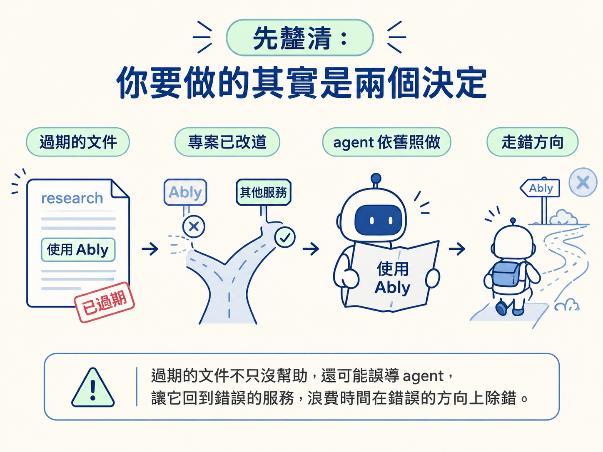
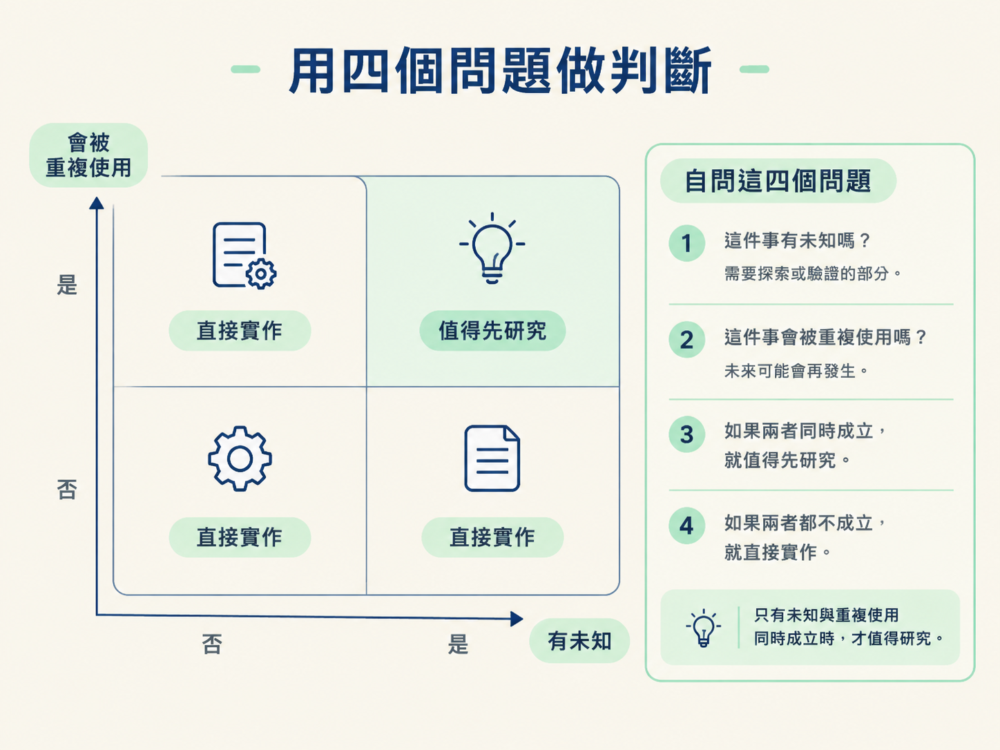
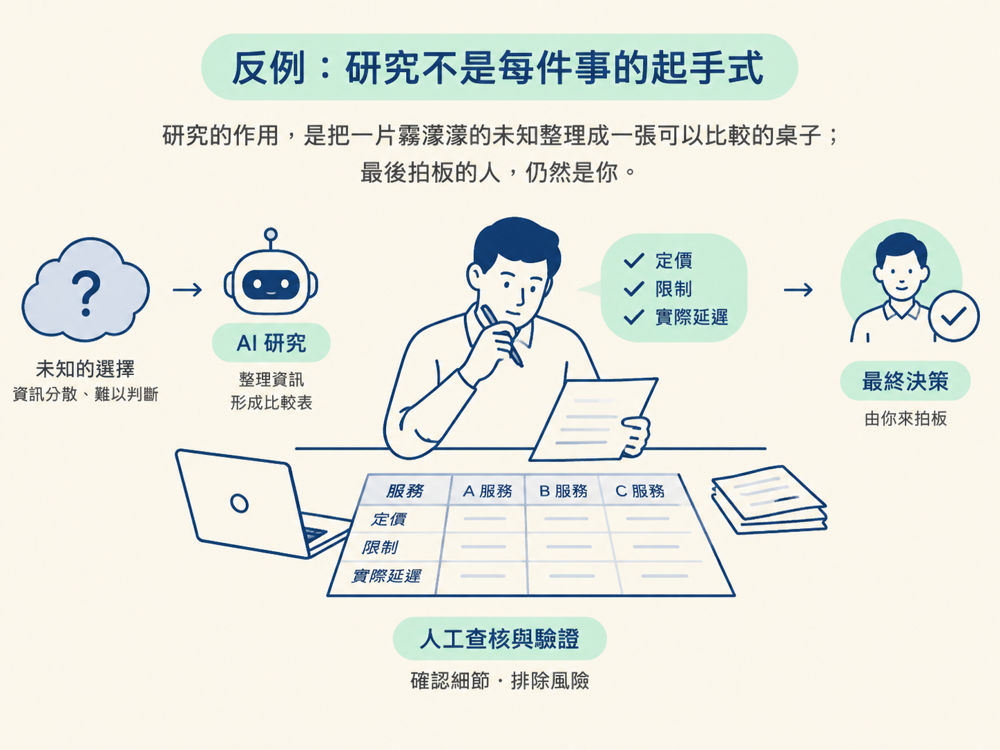

研究文件很像幫 agent 準備的一張地圖：在陌生地形裡，它能幫忙指路；但如果道路早已改道，還把舊地圖留在手邊，反而可能把人帶錯地方。
前面三步，你已經學會挑時機做研究，也能用一組 prompt 產出結構完整的 research 文件。接下來要判斷兩件事：這項工作值不值得先研究，以及研究文件什麼時候該保留、什麼時候該刪除。
這個判斷很重要，因為對 LLM 來說，過期的 markdown 不只是「沒幫助」，還可能直接誤導後續工作。假設文件寫著「我們使用 Ably」，但專案早已換成其他服務，agent 仍可能照著舊文件接回 Ably，最後在錯誤的方向上除錯半天。

研究需要投入一段有品質的時間，陪 agent 把未知收斂成可判斷的資訊。因此，不是每張票都值得先做 research。先把兩種情況攤開比較：
| 值得先做研究 | 不值得，直接做就好 |
|---|---|
| 沒有先例、第一次碰到的技術決策 | 目標明確的小型 bug 修正 |
| 牽涉外部文件或第三方服務 | 既有功能的延伸，只是在組合現成功能 |
| 答案之後會被多張工作票重複引用 | 答案只會用一次，完成後就不再查看 |
| 專案會持續成長，資訊可能被反覆讀取 | 專案規模很小，探索本來就很短 |
右邊那一欄很容易被忽略。想像你有一個支援一百種模型的系統，現在要加入第一百零一個模型。這件事你已經做過一百次，既有模式也很清楚，照著現成做法延伸即可。為它重新寫一份研究文件，往往只是把已知內容再抄一次。
研究應該留給真的有未知，而且這個未知會在後續工作中反覆派上用場的情況。
遇到下一張票時，可以先問自己：
如果「有未知」和「會被重複使用」同時成立，研究通常值得投入。兩者都不成立時，就別為了讓流程看起來完整，替簡單工作加上一層研究負擔。

研究文件的壽命該跟決策綁在一起，不是跟著文件本身跑。決策仍然成立，文件就保留；決策被推翻，文件就應該離場。
這也是為什麼可以把 research 文件視為 steering 文件：它和 CLAUDE.md、skill 一樣，都在引導 agent 的行為。只要事實改變，這些內容就可能腐化，必須更新或移除。
以下是最常見的刪除時機：
刪除時間建議放在整個 Ralph loop 與人工 QA 都完成之後。在那之前，實作與驗證仍可能需要這份背景資料；太早刪除，等於在工作還沒收尾時先拆掉腳手架。
等這批工作完成、決策也確認落地後，再回頭清理即可。你可能會擔心刪掉內容就找不回來，但 Git 歷史會保留完整紀錄。未來真的需要考古，還是能從 commit 找回來。你刪掉的只是現在會誤導人的版本，那段歷史本身還在。
如果決策仍然成立、SDK 沒有改變，而且後續工作還會繼續引用這份文件，就應該保留它，並且隨著事實更新內容。
文件腐化通常只有兩種解法：刪掉，或改對。該選哪一個，取決於它背後的決策是否仍然活著。決策還活著，就更新文件；決策已經結束或被推翻，就刪除文件。
學會研究之後，最容易出現另一種問題：什麼都想先研究。但有些情況下，規則會直接翻轉。
第一類是目標明確的 bug 修正。你已經知道正確行為應該是什麼，現在缺的只是把問題修好，並沒有需要探索的方向。
第二類是既有功能的延伸。例如在成熟系統中加入一個與現有功能相似的項目，你是在組合已知元件，而不是從零開始找答案。這時候直接沿用既有模式，通常比新增一份研究文件更有效率。
還有一個更根本的提醒：研究的品質上限，來自你對外部世界的驗證。Agent 整理得再漂亮，也只是起點。若要進入正式環境，仍然要親自查清楚每個候選服務的定價、限制與實際延遲，不能把 AI 的推薦直接當成最後答案。
研究的作用，是把一片霧濛濛的未知整理成一張可以比較的桌子；最後拍板的人，仍然是你。

先問「這件工作值不值得研究」：只有在存在未知，而且答案會被重複使用時才做；目標明確的 bug 修正與既有功能延伸，直接實作即可。接著問「這份文件該留還是該刪」：決策仍成立，就保留並持續更新；決策被推翻、SDK 改版，或已經沒有工作會引用，就等 Ralph loop 與 QA 結束後刪除。Git 會保留歷史，但進入正式環境前，仍要親自驗證每個候選服務，不要把 AI 的推薦當成終點。